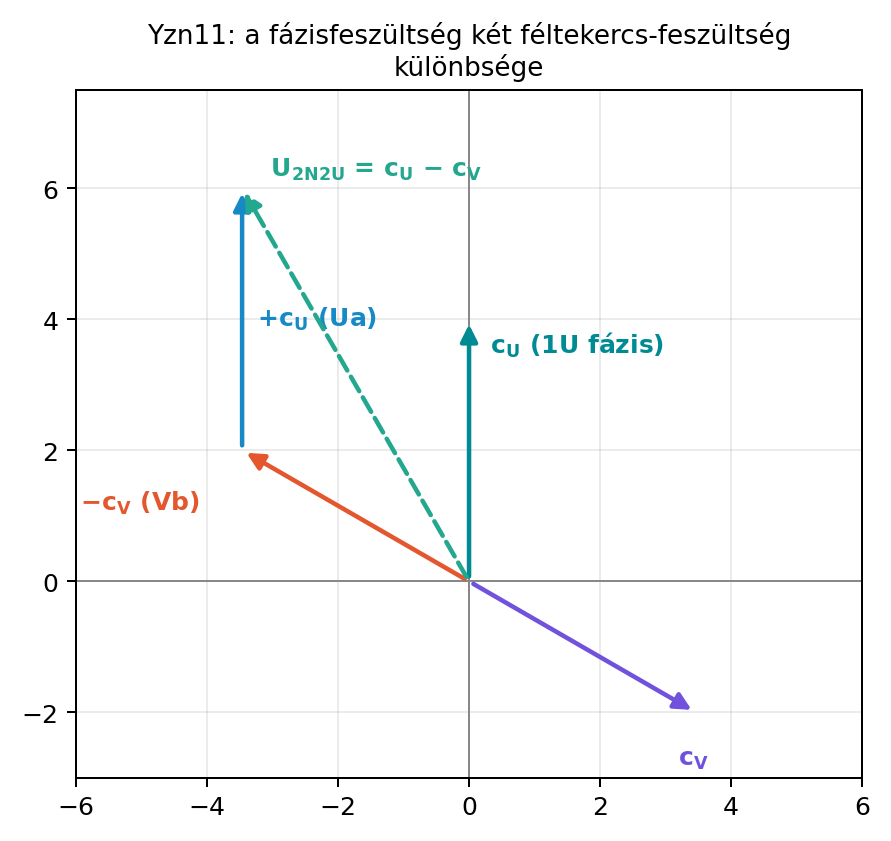

Egy iparterületen a szerelő új kisfeszültségű elosztót táplál meg, amely a közeli trafóállomás 10/0,4 kV-os transzformátoráról kap feszültséget. A transzformátor névtábláján ez áll: Dyn5. A bekötéshez tudnia kell, hogy a szekunder oldalon hol van a nullavezető, milyen fázissorrendre számíthat, és miért nem mindegy, hogy a primer oldal deltában vagy csillagban van-e kapcsolva. Ugyanígy, ha két transzformátort párhuzamosan kell kapcsolni, a kapcsolási csoport tévedése azonnal súlyos köráramot és meghibásodást okozhat. Ezért a kapcsolási csoport nem elvont gyártói adat, hanem a biztonságos üzem, a feszültségmérés és a hálózati illesztés kulcsa.
A következő kapcsolási rajz három egyfázisú transzformátorból felépített háromfázisú bank Dyn5 kapcsolását mutatja. A primer oldal delta (D), a szekunder oldal csillag, kivezetett nullavezetővel (yn). A pont (•) a tekercsek kezdetét, vagyis az azonos polaritású végeket jelöli. A szekunder tekercsek fordított polaritással, a kezdő végükkel kerülnek a csillagpontra – ettől lesz az óraszám 5 és nem 11. A rajz elvi vázlat, nem méretarányos.
A Dyn5 óraszám azt jelenti, hogy a kisfeszültségű oldali vonali feszültség 5 · 30° = 150°-ot késik a nagyfeszültségű oldali megfelelő vonali feszültséghez képest. Az óratárcsán a nagy mutató a nagyfeszültségű oldalt, a kis mutató a kisfeszültségű oldalt jelképezi; 5 óránál a kis mutató 150°-kal van a 12 órához képest.

A vektorábra tehát ugyanazt mutatja, mint a névtáblán a rövid „Dyn5” felirat, csak grafikusan.
Definíció. A háromfázisú transzformátor két alapvető felépítésben készülhet:
Megjegyzés. A gyakorlati szerelő többnyire a három oszlopos elosztótranszformátorral találkozik; a bank-elrendezés inkább erőművi vagy nagyipari környezetben fordul elő. Bank összekapcsolása előtt az egységek tekercseinek polaritását méréssel ellenőrizni kell; a voltmérős módszert a Transzformátor- és gépmérések alfejezet mutatja.
A háromfázisú transzformátor primer és szekunder tekercseit egyaránt csillagba (Y), deltába (D) vagy zegzugba (Z) köthetik. A jelölésben a nagybetű a nagyobb feszültségű oldalt, a kisbetű a kisebb feszültségű oldalt jelöli. Ha a csillagpont ki van vezetve, akkor a megfelelő oldalon N (nagybetű) vagy n (kisbetű) jelölést kapjuk.
Összefüggés. A csillag- és deltakapcsolás már ismert összefüggéseiből következik:
A zegzug (Z) kapcsolás speciális: minden fázis tekercse két féltekercsből áll, amelyeket különböző oszlopokra helyeznek, és egymáshoz képest ellentétes irányban kapcsolnak. Ez csökkenti a nulla sorrendű impedanciát, ezért a zegzug szekunder oldalú transzformátorok jól viselik az egyfázisú, aszimmetrikus terheléseket.
A zegzug kapcsolás bekötését és fázorábráját a következő elvi rajz mutatja. Kövesd végig rajta a 2U kapocsig vezető utat: a 2N csillagpontból a V oszlop alsó féltekercsén, majd az U oszlop felső féltekercsén át jutsz el a kapocsig.
![Yzn11 kapcsolás (szekunder oldal, elvi) - Három oszlop (U, V, W) egymás mellett; mindegyiken felül a primer tekercs (csillagban, 1U/1V/1W, kivezetett csillagpont nélkül), alatta a szekunder két féltekercse: a (felső) és b (alsó). Minden féltekercs ponttal jelölt kezdete felül van. A 2N csillagpontra a három b féltekercs pontozott vége kerül; a b féltekercs vége a következő oszlop a féltekercsének végére (Vb → Ua, Wb → Va, Ub → Wa), az a féltekercs pontozott vége a 2U/2V/2W kapocs. A kereszteződő vezetékek pötty nélkül nem csatlakoznak. Elvi vázlat; a valódi gépen a két féltekercs ugyanazon az oszlopon egymás fölött ül.](assets/ve091-diagram-3.png)
A fázisfeszültség tehát nem egy tekercs feszültsége, hanem két, 120°-kal eltolt féltekercs-feszültség különbsége:

A két féltekercs feszültsége számtanilag 2-szer akkora lenne, mint egy féltekercsé, vektorosan azonban csak -szoros: a vektoros összeg a számtani összeg -szorosa. Ugyanakkora fázisfeszültséghez ezért -szörös, azaz ≈ 15,5 %-kal több menet (és több réz) kell, mint csillagkapcsolásnál. Cserébe minden fázis két oszlopon ül: ha egy fázist egyedül terhelünk, a nulla sorrendű áramot két oszlop féltekercsei egymással szemben vezetik, így az oszlopok gerjesztése kiegyenlítődik, a csillagpont nem „úszik el”, és a fázisfeszültségek aszimmetrikus terhelésnél is közel szimmetrikusak maradnak. Ezért találkozunk az Yzn kapcsolással kisebb elosztó- és oszloptranszformátoroknál, valamint földelőtranszformátorként (ellenőrizendő: a hazai elosztói gyakorlat és a típusválaszték). Ellenőrző kérdés: mi történne az óraszámmal, ha mindkét féltekercset fordítva kötnénk be? (Válasz a következő szakasz szerkesztéséből: Yzn5.)
Definíció. A kapcsolási csoport a háromfázisú transzformátor primer és szekunder tekercseinek kapcsolási módját, valamint a megfelelő vonali feszültségek közötti fáziseltérést adja meg. A jelölés általános alakja:
Szabály. Az óraszám értéke 0 és 11 között van, és azt mutatja, hogy a kisfeszültségű oldali megfelelő vonali feszültség hány 30°-os szöggel késik a nagyfeszültségű oldali vonali feszültséghez képest. Az óratárcsán a nagy mutató a nagyfeszültségű oldalt jelképezi 12 órán, a kis mutató pedig a kisfeszültségű oldalt; az óraszám a kis mutató állása.
Továbbvitt eredmény. A kapcsolási csoport ismeretét használjuk az Autó-, mérő- és kistranszformátorok, olajtrafó, védelmek, telepítés alfejezetben, ahol az olajtranszformátor üzembe helyezésénél az áttételt és a kapcsolási csoportot ellenőrizzük. A párhuzamos üzem feltételeit a Terhelés, hatásfok, veszteségek és kapcsolások alfejezet már tárgyalta.
Az óraszámot nem kell bemagolni: a kapcsolási rajzból öt lépésben megszerkeszthető. Jelölje , , az U, V, W oszlop primer tekercsének feszültségét a ponttal jelölt kezdettől a pont nélküli vég felé.
Szabály (öt lépés).
A következő ábra a fejezet elején látott Dyn5 kapcsolásra játssza le az öt lépést, a jobb alsó panel pedig kontrollként a Dyn11 eredményét mutatja; az interaktív változatban a csoport legördülő listából választható (Dyn5, Dyn11, Yd11, Yd1, Yzn11, Yzn5, Yy0, Yy6).
Kövesd végig a 3. panelen: mivel a szekunder tekercsek pontozott vége kerül a csillagpontra, a 2U fázisfeszültség a -val ellentétes irányú; ettől lesz 5 és nem 11 az óraszám.
| Kapcsolás (a 3. lépés) | Eredmény | Ha a szekunder tekercseket megfordítod |
|---|---|---|
| D primer, csillag szekunder, pontozott vég a 2N-en | Dyn5 (2U fázis = irányú) | Dyn11 |
| Y primer, csillag szekunder, pontozott vég a kapcson | Yy0 | Yy6 |
| Y primer, delta: U oszlop 2U(•)–2W, V oszlop 2V(•)–2U, W oszlop 2W(•)–2V | Yd11 ( irányú) | Yd5 |
| Y primer, delta: U oszlop 2U(•)–2V, V oszlop 2V(•)–2W, W oszlop 2W(•)–2U | Yd1 | Yd7 |
| Y primer, zegzug: 2N → Vb (• → vég) → Ua (vég → •) → 2U | Yzn11 () | Yzn5 |
A szabály röviden: a szekunder tekercsek megfordítása +6 órát (180°-ot) ad; deltánál pedig az is számít, melyik kapocspár közé kerül az egyes oszlopok tekercse (Yd11 vagy Yd1).
A hazai közcélú elosztóhálózatokban a 10/0,4 kV-os vagy 20/0,4 kV-os transzformátorok (egyes körzetekben 22/0,4 kV-osak is; ellenőrizendő: az elosztói engedélyes aktuális műszaki előírása) leggyakoribb kapcsolási csoportja a Dyn5 (régebbi hálózatokon Yzn5 is előfordul, különösen aszimmetrikus terhelésű körzetekben). Ennek oka:
Figyelem. A nullavezető terhelhetőségét a transzformátor áramadatlapja és a hálózati engedélyes előírásai szabják meg. Aszimmetrikus terhelésnél a nullavezetőben a fázisáramok vektori összege folyik, ezért a nulla vezető túlterhelhető, ha a tervezés nem veszi figyelembe.
A háromfázisú transzformátorok kapcsait szabványosan jelölik, a feszültségszintek szerint:
A névtáblán a kapcsolási csoporton kívül általában szerepel:
Megjegyzés. A pontos névtábla-mezők gyártónként és szabványkiadásonként eltérhetnek, ezért mindig a tényleges adattáblát kell értelmezni.
Egy Dyn5 elosztótranszformátoron ezek a jelölések így jelennek meg (következő ábra). Az (a) részen a fedélen három magas KÖF-átvezető (1U, 1V, 1W; delta tekercselés, ezért csillagpont-kivezetés nincs) és négy alacsonyabb KIF-átvezető (2N, 2U, 2V, 2W) áll; a 2N a kivezetett csillagpont, erről indul a nullavezető. Mellettük a megcsapolás-átkapcsoló (3), a tartályon az adattábla (4) és a földelőcsavar (5). A (b) rész a háromoszlopos vasmagot mutatja: minden oszlopon egy fázis KIF-tekercse belül, KÖF-tekercse kívül ül. A (c) rész egy 250 kVA-es példa-adattábla.
Az adattábla áramai az első kidolgozott példa módszerével ellenőrizhetők: , . A megcsapolás-átkapcsolót csak feszültségmentes állapotban, a hálózati engedélyes szakszemélyzete állíthatja; a kapocsjelölést (1U…2N) a bekötés előtt mindig a tényleges adattáblával és kapcsolási rajzzal kell egyeztetni. A HTML-kiadásban a részek és az adattábla sorai rámutatásra magyarázatot adnak.
Szabvány. A háromfázisú teljesítménytranszformátorokra vonatkozó európai/magyar szabvány az MSZ EN 60076 sorozat (IEC 60076). Ebben a sorozatban rögzítik a teljesítménytranszformátorok névleges adatait, vizsgálatait, hűtési módjait és a kapcsolási csoportok jelölését. A kapcsolási csoport jelölésének logikája (betűk és óraszám) ebből a szabványból származik; a transzformátor kapocs- és kapcsolásicsoport-jelölését a teljesítménytranszformátor-szabványsorozat (MSZ EN 60076-1; ellenőrizendő: pontos szakasz és aktuális kiadás), a rajzjeleket az MSZ EN 60617 tartalmazza. (A forgógépek, motorok kapocsjelölését az MSZ EN 60034-8 adja; erről a Kapocsdoboz, csillag–delta bekötés és forgásirány alfejezet szól). A pontos szabványkiadásokat és az esetleges nemzeti kiegészítéseket ellenőrizni kell (aktuális MSZT-katalógus). A névtábla adatainál mindig a gyártói dokumentáció és a hatályos előírás a mérvadó.
Eset. Egy közcélú trafóállomásban 630 kVA, 10/0,4 kV, Dyn5 transzformátor üzemel. A szerelő egy új ipari fogyasztói csatlakozást készít elő, és a kisfeszültségű elosztóban ellenőrzi a fázissorrendet. Azt tapasztalja, hogy a szekunder oldalon a fázisok sorrendje L1, L2, L3, és a nullavezető a csillagpontból van kivezetve, a földeléssel összekötve. A fogyasztói mérőhelynél 400 V vonali feszültséget mér, fázisonként 230 V-ot a nullához képest. Egy egyfázisú, 3,5 kW-os fűtőtestet az L1 fázisra kötnek; ez aszimmetrikus terhelést okoz, de a Dyn5 transzformátor ezt jól viseli. A feszültség a másik két fázison csak minimálisan változik, a nullavezetőn a várható egyfázisú áram folyik. A szerelő tudja: ha egy időben több egyfázisú berendezés kerül ugyanarra a fázisra, a nulla vezető túlterhelhető, ezért a terhelést a fázisok között kiegyenlítve kell elosztani.
Tanulság. A Dyn5 jel rövid, de a gyakorlatban a szerelő számára azt jelenti, hogy a szekunder oldal csillagpontja kivezetett, a nullavezető használható, és a transzformátor jól tűri az egyfázisú fogyasztókat. A kapcsolási csoport félreértése azonban már a csatlakozás tervezésekor hibás döntéshez vezethet.
Az alábbi interaktív ábrán a felhasználó csúszkával kiválaszthatja a leggyakoribb kapcsolási csoportokat (például Yy0, Yy6, Dyn5, Yzn5, Yd11). A fázorábrán megjelenik a nagyfeszültségű oldali vonali feszültség referencia vektora (12 óra, függőlegesen felfelé), valamint a kisfeszültségű oldali megfelelő vonali feszültség vektora. Az óratárcsa az adott óraszámot, a szöveges mező a fáziseltérést fokban mutatja. Egy sematikus kapcsolási vázlat a primer és szekunder tekercsek kapcsolását (delta, csillag, zegzug, nullavezető) ábrázolja.
A statikus tartalék a Dyn5 állapotot mutatja: delta primer, csillag szekunder kivezetett nullavezetővel, 5-ös óraszám, 150°-os késés.

A kis- és nagybetű jelentésének felcserélése. Gyakori hiba, hogy valaki a Dyn5 jelet úgy értelmezi, hogy a szekunder oldal delta, a primer pedig csillag. A helyes: a nagybetű mindig a nagyobb feszültségű oldalt jelöli, tehát a D a primer delta, az y a szekunder csillag.
Az óraszámot közvetlenül foknak gondolni. Az 5 nem 5°-ot, hanem 5 · 30° = 150°-ot jelent. Ez a tévedés mérési jegyzőkönyvben vagy fázisforgatásnál rossz következtetéshez vezet.
A nullavezető kivezetését figyelmen kívül hagyni. Ha a szekunder csillag, de a nullavezető nincs kivezetve (például Dyn helyett Dy), akkor nem lehet 230 V-os egyfázisú fogyasztókat táplálni. A szerelőnek ellenőriznie kell, hogy a névtáblán és a kapocsdobozban valóban van-e n jelű kivezetés.
Eltérő kapcsolási csoportú transzformátorok párhuzamos kapcsolása. Ez súlyos hiba: még azonos feszültség és teljesítmény mellett is köráram keletkezik, amely a transzformátorokat és a kapcsolókészülékeket károsítja. A párhuzamos üzem előtt a kapcsolási csoportnak azonosnak kell lennie.
Gyakorlás: ennek az alfejezetnek a kidolgozott példái, gyakorlatai és megoldással ellátott feladatai az Összefoglaló feladatgyűjtemény villanyszerelő tanulóknak című kötet 25.3 szakaszában találhatók.
A háromfázisú transzformátor lehet három oszlopos magtranszformátor vagy három egyfázisú egységből álló bank. Tekercseit csillagba (Y/y), deltába (D/d) vagy zegzugba (Z/z) kapcsolhatják; a csillagpont kivezetése N/n jelölést kap. A kapcsolási csoport (pl. Dyn5, Yzn5, Yy0) a nagyobb feszültségű oldal kapcsolását nagybetűvel, a kisebb feszültségű oldalét kisbetűvel, a fáziseltérést pedig óraszámmal adja meg. Az óraszám 0–11 között lehet, minden óra 30°-nak felel meg. A Dyn5 elosztótranszformátort elterjedten használják, mert a szekunder csillagpont kivezetett nullavezetőt ad, a primer delta tekercselés pedig csökkenti az aszimmetrikus terhelés okozta feszültségtorzulást. A kapocsjelölés a nagyfeszültségű oldalon 1U/1V/1W, a kisfeszültségű oldalon 2U/2V/2W/2N. A névtáblán a névleges teljesítmény, feszültségek, áramok, frekvencia, és hűtési mód szerepel. Továbbvitt eredmény. A kapcsolási csoportok ismeretét az Autó-, mérő- és kistranszformátorok, olajtrafó, védelmek, telepítés alfejezetben a helyes telepítéshez (fázishelyes bekötés), a párhuzamos üzem feltételeit pedig a Terhelés, hatásfok, veszteségek és kapcsolások alfejezetben már megismertük; a kapcsolási csoport azonosságát a párhuzamos kapcsolás előtt ellenőrizni kell. Eltérő óraszámú transzformátorok párhuzamos kapcsolása tilos, mert nagy köráram keletkezik, amely azonnali meghibásodást okozhat.
Az elméleti összefüggések (áttétel, óraszám, delta/csillag áram- és feszültségviszonyok) stabil fizikai és elektrotechnikai ismeretek. A kapcsolási csoportok jelölésére vonatkozó szabvány az MSZ EN 60076 sorozat; a pontos kiadást, a kapocsjelölésre vonatkozó jelenlegi szabványokat és a névtáblán előírt mezőket ellenőrizni kell az aktuális MSZT-katalógusban. A Dyn5 elosztótranszformátorok hazai gyakorisága, valamint a nullavezető terhelhetőségére vonatkozó konkrét előírások a hálózati engedélyesek és a gyártók aktuális dokumentációitól függenek.